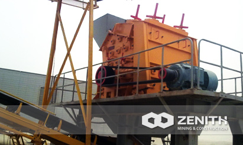
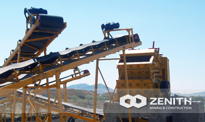

- 
- 
PF Impact Crusher
Generally speaking, the PF series impact crusher is a good choice in the stone crushing and sand making industry. Compared with hammer crusher, the PF series of impact crusher has higher reduction ratio and can better use the high-speed impacting energy of the whole rotor. However, as flat hammer of impact crusher is easy to wear and tear, the application in hard material crushing is also limited.
PF imapct crusher Overview and Application
Impact crusher can deal with each kind of coarse, medium, fine cubic material (granite, limestone and concrete, etc) with feeding size not more than 500mm and crushing strength not more than 350MPa. Absorbing advanced technology both at home and aboard, Zenith's PF series impact crusher can easily meet those requirements of mining condition in domestic mining industry. In addition, the discharging size of our PF series impact crusher is adjustable and the crushing specification is diversified. Users can adjust the gap between hammer head and impact plate and matching parts as needed to get perfect outputting size. Unmatched excellent performance is shown that Zenith's PF series impact crushers perform well in the secondary crushing, tertiary crushing and material recovery.
PF imapct crusher Main features and advantages
- Chrome hammer and special impact plate;
- Cubical shape of final product and the output size is adjustable;
- Big feeding hole, high crushing chamber, applicable for crushing bulk materials of high hardness and less powder products.
- Gap between impact plate and flat hammer can be conveniently adjusted to effectively control outputting size. Finished product is cubic and in good shape.
- Compact structure, strong rigidity of machine, rotor has big inertia moment.
- Adoption of new rotor increases impact force.
- Complete crushing function, high reduction ratio, high productivity, low energy consumption and high comprehensive benefit.
- Non-key connection, simple structure, convenient maintenance, economical, reliable.
The tacnology data
| Model | Rotor Φ×L (mm) | Feed Opening (mm) | Max Feeding (mm) | Capacity (t/h) | Power (kw) | Motor Model | Machine Size (mm) |
|---|---|---|---|---|---|---|---|
| PF1010 | Φ1000×1050 | 400×1080 | 350 | 50-80 | 4-75 | Y280S-4/75 | 2455×2086×2800 |
| PF1210 | Φ1250×1050 | 400×1080 | 350 | 60-120 | 6-110 | Y315L1-6/110 | 2590×2050×2810 |
| PF1214 | Φ1250×1400 | 400×1430 | 350 | 80-160 | 6-132 | Y315L2-6/132 | 2590×2400×2810 |
| PF1315 | Φ1300×1500 | 860×1520 | 350 | 120-260 | 6-200 | Y355M3-6/200 | 2930×2760×3050 |